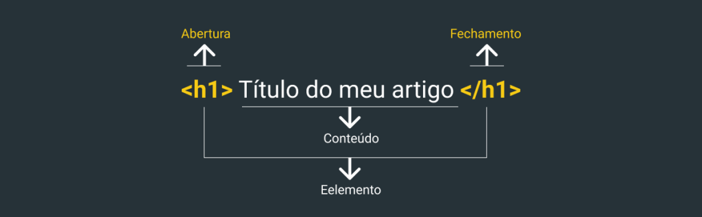

A HTML é uma linguagem de marcação que significa HyperText Markup Language, criada pelo Fisico Britânico Tim Berners-Lee, em 1991 para melhorar a parte de hiperlinks, que na criação da internet eram muito basicas e combinemos aqui... não eram muito bonitas né hahaha. outra coisa que a HTML ajudou muito foi na parte de estrutura do site, com a adição de caixas onde podiamos colocar os conteudos separados em cada uma dessas caixas, fazendo assim com que o conteudo fosse visualizado de uma melhor forma para o usuario, ficando assim graficamente mais atraente para quem fosse acessar o site, já que antigamente não possuia partes graficamente evoluidas, basicamente eram sites cinzas com links azuis.

Como podemos ver na imagem a cima, era bem simples a tenologia antes da criação da html, como sabemos a internet foi criada para transferir dados importantes e para comunicação de bases militares durante a guerra fria, então antes da HTML vieram diversas ferramentas para tentar comunicação e transferencia de dados. Veja a história da internet clicando aqui
A linguagem HTML é formada a partir de Tags, que são palavras-chaves para criar areas e para modificar algumas coisas nos textos, essas areas são chamadas de CAIXAS, ou Box no inglês,essas caixas nos permitem organizar os espaços dentro do site.
Mas primeiro vamos ver como é uma tag e qual é a sua anatomia.
Podemos ver que todas as tags possuem uma tag de abertura e de fechamento, e que o que vai dentro chamamos de conteúdo, e toda a tag vamos chamar de elemento. Não vamos nos aprofundar muito em html pois não é o foco desse artigo, mas se você quiser aprender de verdade como desenvolver em html, css, e também linguagens de programação como JavaScript, PHP, Python te indico conhecer a plataforma do Curso em video, lá você tem a disposição diversos cursos online e melhor 100% gratuito, coisa boa né! então depois que você ler esse artigo corre la e começa seu curso e garante já seu certificado para dar aquela tunada no seu curriculo.
A HTML desde sua criação, passou por diversas atualizações que adicionaram e removeram tags. Atualmente estamos na versão 5.2, que trouxe a questão da semântica que traz o significado as funções dentro da linguagens.
O que tornou algumas tags obsoletas, e a partir dai chegamos proximos a criação das CSS, pois algumas tags alteravam caracteristicas e não o sentido das coisas dentro do documento. e para resolver isso o Hakon Lie que é um pioneiro da web, um ativista normas, e a partir de 2009, Chief Technology Officer da Opera Software, criou uma linguagem que ficou com essa parte de estilização dos objetos criados a partir da HTML.
História das CSS
Essa linguagem se chama CSS que significa Cascading Style Sheet, ela começou a ser popular entre o meio do desenvolvimento web, pois facilita a configuração de estilo do arquivo HTML, onde podemos definir altura, largura, tamanho, estilo de fontes e definição de cores e efeitos como transições, opacidades etc..